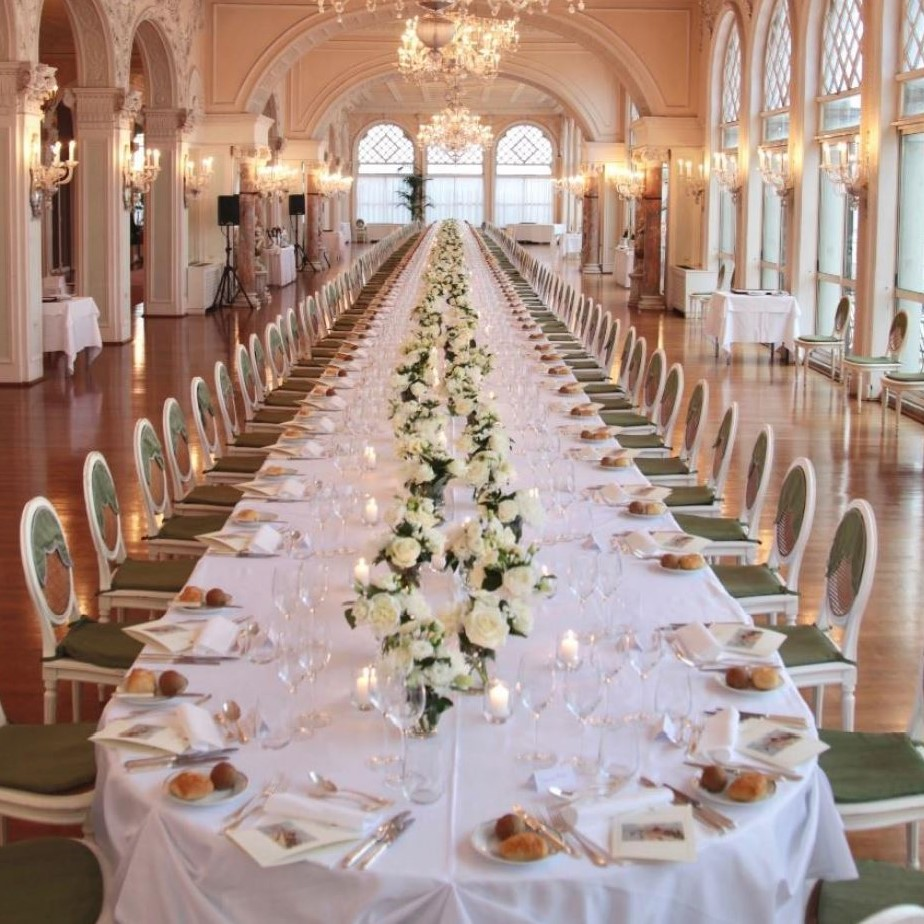

Caterina & Tommaso
Ci sposeremo sabato pomeriggio il 9 Luglio 2022 alle ore 14.30 nella sala "Sala degli Stucchi" di Ca' Farsetti, a Venezia.
-

14.30
Cerimonia
La cerimonia avrà luogo nella Sala degli Stucchi di Ca' Farsetti, San Marco 4136, Venezia. L'accesso alla "Sala degli Stucchi" avviene dall'ingresso presso il lato del Canal Grande, in Riva del Carbon.
-

15.30
Spostamento in barca
Dopo la cerimonia una barca verrà a prendere gli invitati, portandoli fino alla fermata del Casinò del Lido di Venezia.
-

16.45
Festeggiamenti
Dopo una passeggiata di circa 5 minuti, proseguiremo i festeggiamenti all'Hotel Excelsior, in via Lungomare Guglielmo Marconi 41, Lido di Venezia.
-

17.00
Brindisi
Prima di cominciare la festa ci sarà un brindisi nella "Terrazza dei Fiori". I testimoni sono stati
costrettiinvitati a leggere un breve discorso. -

18.30
Cena
Ceneremo nella "Sala degli Stucchi" dell'Hotel Excelsior (si, la sala si chiama come quella della cerimonia, ma è un caso).
AbbiamoLa sposa ha scelto un menù a base di pesce, quindi se avete intolleranze alimentari o allergie fatecelo sapere! -

21.00
Taglio della torta
Finita la cena, ci sarà il taglio della torta. Curiosità. Lo sapevate che la base della torta è in reltà in legno? Quella parte della torta di solito non viene servita.
-

21.30
DJ e serata danzante
Per la serata, abbiamo assunto come DJ un artista di fama internazionale. DJ Sabba suonerà infatti al nostro matrimonio. Di conseguenza, pare che anche lo sposo sia intenzionato ad unirsi alle danze.
-

Il logo dell'evento
Questo misterioso simbolo, almeno in teoria, rappresenta una "R" e un "8", in una parola: "Rigotto". Lo sposo prende le distanze da questa iniziativa.